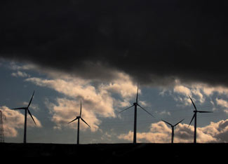

The U.S. wind power industry directly employs about 85,000 people today, which is a 70 percent increase from a year ago, according to a new report from the American Wind Energy Association.
The trade association’s annual wind industry report, released on Monday, found that 10 new manufacturing facilities went online in the past year, while 17 were expanded and another 30 new facilities were announced. The new facilities are located in 24 states, so the economic benefits are being distributed around most of the country.
GE Energy continues to dominate the market share for wind turbines in the United States, although it faces increased competition from foreign companies, as five new companies entered the U.S. market in 2008. But that’s not entirely bad news, as foreign companies such as Acciona Energy, Siemens and Vestas are making significant investments in new U.S.-based manufacturing facilities.
The U.S. market for small wind turbines nearly doubled in 2008, as more than 10,000 turbines were sold, adding 19.2 megawatts (MW) of new wind power capacity. Small wind turbines are defined as 100 kilowatts or less in capacity, and are the type most likely to be used by residences and small businesses. The industry is bullish on continued growth, projecting a 30-fold increase in as few as five years, despite the economic slowdown. The United States continues to command roughly half of the global market for small wind turbines, and one-third of the global manufacturers are located here. Incentives such as the federal investment tax credit are spurring rapid growth in this area.
While the overall U.S. wind power industry experienced record growth in 2008, the sluggish economy and lack of credit are expected to slow wind power development significantly this year.
A record 8,545 MW of wind power were installed in 2008, but for 2009 the growth is expected to drop to only 5,000 MW. The American Recovery and Reinvestment Act is meant to help with that by allowing alternatives to tax credits, which lost their appeal during the economic downturn. However, electric transmission capacity is also holding back wind power growth, as an estimated 300,000 MW of proposed wind projects are currently waiting for access to the grid. According to the American Wind Energy Association, most of those projects cannot be accommodated by today’s electrical grid. The recovery act is also meant to ease this situation, as it provides for major investments in electrical transmission capacity.
|
 BENLETO/FLICKR Though the stormy economy is expected to damper growth in 2009, the state of wind power development was bright in 2008. |
|
|